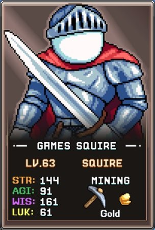
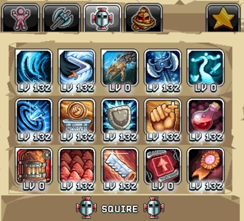
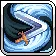
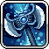
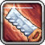
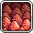
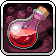
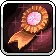
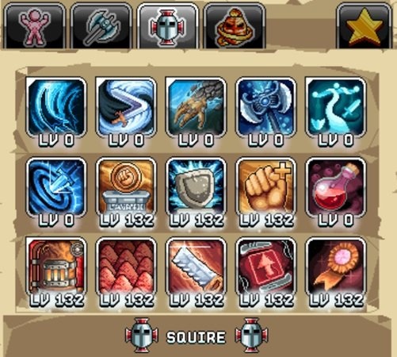
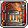

번역 안내. 클래스·스킬·탤런트 이름 등 고유명사는 인게임 검색을 위해 영어 그대로 두었고, 설명만 한글로 옮겼습니다.
이 Squire 빌드 가이드는 내구성 높은 전사이자 World 3 건설(Construction) 스킬 마스터를 위한 탤런트 템플릿을 제공합니다. 핵심 탤런트 요약과 각 탤런트가 진행에 미치는 영향을 상세히 설명하며, 우리의 Warrior 및 채광(Mining) 빌드 페이지와 함께 활용하는 것을 권장합니다.

전투(Damage) 빌드

이 탤런트 추천은 AFK와 Active(직접 플레이) 전투 능력을 모두 최적화합니다. Squire는 주로 Refinery(정제소) 랭크에서 데미지량이 올라가는데, 이는 시간 기반 메커니즘이므로 초반에는 다른 캐릭터에 비해 데미지 스케일링이 느린 편입니다.
Squire 전투 빌드 우선순위:
| 탤런트 | 효과 | 설명 |
|---|---|---|
 Shockwave Slash Shockwave Slash |
앞으로 슬래시하여 여러 적에게 충격파 데미지 | 앞의 적에게 데미지를 주는 핵심 공격 스킬로 AFK 수익을 높이고 Active 전투에도 유용합니다. 초반에는 50포인트를 권장하며, 이후 다른 우선 탤런트를 확보한 뒤 필요 시 맥스하세요. |
 Daggerang |
여러 적에게 데미지를 주며 돌아오는 단검 투척 | 강력한 광역 공격 탤런트로 Shockwave Slash와 같은 방식으로 초반 50포인트 후 나중에 맥스하세요. |
| Precision Power | Accuracy(명중률)가 몬스터 필중 요구치의 1.5배일 때, Refinery 랭크당 +% 데미지 | Squire의 주요 데미지 원천으로 시간과 함께 서서히 쌓이는 Refinery 랭크에 따라 스케일링됩니다. Active로 맵을 밀 때 Accuracy가 부족하면 발동되지 않을 수 있습니다. |
 Mastery Up |
+% 숙련도(최소 데미지) 증가 | 최소 데미지는 Idleon AFK 전투 수익에 반영되므로, 시간당 처치 수·전리품·경험치 전반을 향상시킵니다. |
 Sharper Saws |
+% 건설 경험치 | 건설은 Idleon에서 매우 중요한 스킬로, 다수의 건물이 진행도 버프와 편의 기능을 제공합니다. 건설 레벨 자체가 건설 속도에 가장 큰 기여를 하므로 전투 빌드에서도 투자하는 것이 좋습니다. |
 Redox Rates |
보관함의 Redox Salts 10의 거듭제곱당 +% 건설 속도 | 건설의 중요성을 고려하면 전투 빌드에서도 이 추가 건설 속도를 확보하는 것이 진행에 중요합니다. |
 Blocky Bottles |
Warriors Rule 버블 레벨마다 Meat Shank 최대 레벨 증가 | 연금술 Warriors Rule 버블 진행도와 탤런트 포인트가 충분하다면 Meat Shank 탤런트를 더 높이 올려 데미지를 늘릴 수 있습니다. |
| STR Summore | Fist of Rage 최대 탤런트 레벨 + | Squire의 마지막 데미지 원천으로, Blocky Bottles와 마찬가지로 이전 탤런트 탭에 충분한 포인트가 있어야 효과를 낼 수 있습니다. |
 Back to Basics |
Warrior 탤런트 탭 포인트 + | 위의 두 탤런트를 활용하려면 추가 Warrior 탤런트 포인트가 필요한 경우가 있으므로, 진행 중인 플레이어에게 중요합니다. 탤런트 포인트가 풍부한 후반에는 계정 특성에 따라 생략 가능합니다. |
 Shieldiest Statues Shieldiest Statues |
Power, Mining, Defence 조각상이 +% 더 큰 보너스를 제공 | 데미지를 높이는 Power 조각상 효과를 부스트해 Squire 전투 빌드에서 작은 데미지 원천이 됩니다. |
 Fistful of Obol Fistful of Obol |
Obols가 +% 더 많은 STR 제공 | 장착한 Obols의 작은 STR 값을 소폭 올려 주지만 가장 낮은 우선순위입니다. |
건설(Construction) 빌드

Squire의 건설 빌드는 채광 탤런트와 같은 프리셋에 배치하는 것이 좋습니다. 이 빌드는 특히 World 3 초반 소금 정제 병목을 극복하는 데 중요하며, 이 프리셋의 Refinery Throttle을 매일 빠짐없이 사용해야 합니다.
Squire 건설 빌드의 스킬 탤런트 투자 우선순위:
| 탤런트 | 효과 | 설명 |
|---|---|---|
 Refinery Throttle |
정제소 사이클을 자동 트리거 | 소금이 World 3 진행 속도의 주요 결정 요인이므로, Idleon 일일 활동의 일환으로 매일 성실히 사용해야 하는 중요한 탤런트입니다. 레벨이 높을수록 더 많은 사이클이 트리거되므로 최대 포인트 투자가 필수입니다. |
| Sharper Saws | +% 건설 경험치 | 전투 빌드와 마찬가지로 건설 경험치는 항상 최대화하는 것이 좋습니다. 레벨이 건설 속도에 가장 크게 기여하기 때문입니다. |
| Redox Rates | 보관함의 Redox Salts 10의 거듭제곱당 +% 건설 속도 | World 3 스킬 진행 속도를 높이는 추가 건설 속도 원천입니다. |
 Super Samples Super Samples |
3D Printer 샘플 채취 시 +% 샘플 크기 | 샘플링은 실제 AFK 스킬링 수익의 일정 비율을 자동 생산하는 World 3 메커니즘입니다. 이 탤런트는 그 비율을 높여 채광 프린터 수익을 향상시킵니다. |
| Shieldiest Statues |
Power, Mining, Defence 조각상이 +% 더 큰 보너스를 제공 | Mining 조각상을 강화해 광석 수익을 높이며, 채광 조각상을 더 많이 파밍할수록 효과가 커집니다. |
| STR Summore | Fist of Rage 최대 탤런트 레벨 + | 채광 효율에 소폭 기여하지만, 충분한 Warrior 탤런트 포인트가 있어야 활용 가능합니다. |
| Fistful of Obol |
Obols가 +% 더 많은 STR 제공 | 채광 수익에 마지막 작은 부스트를 주지만 가장 낮은 우선순위입니다. |
| Back to Basics | Warrior 탤런트 탭 포인트 + | 추가 Warrior 탤런트 포인트가 필요한 경우에 레벨을 올리세요. |